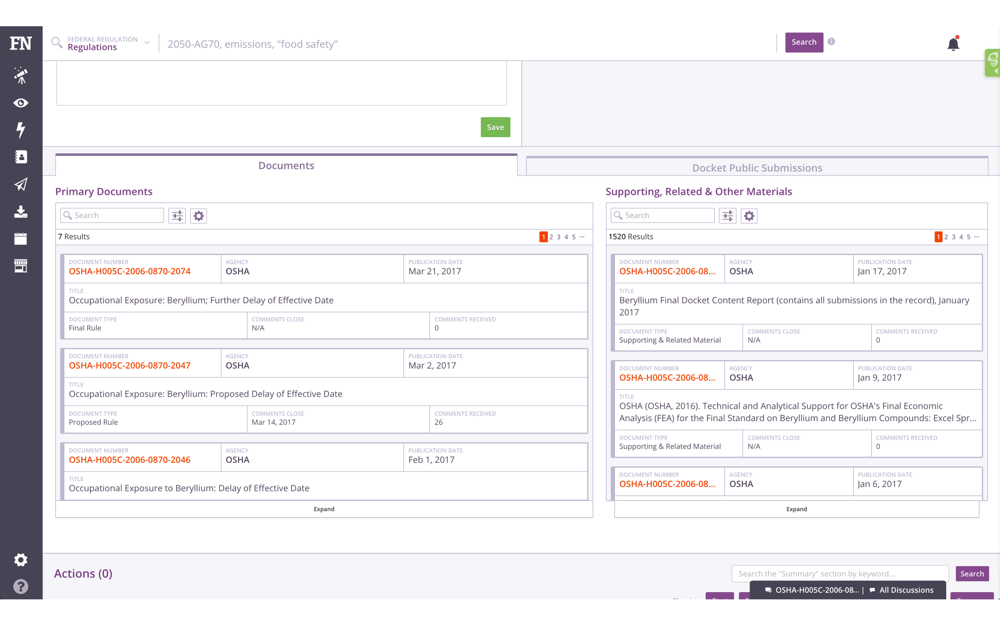
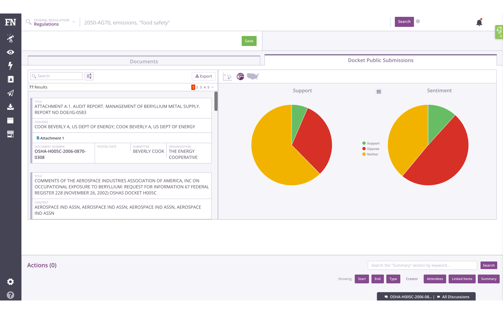
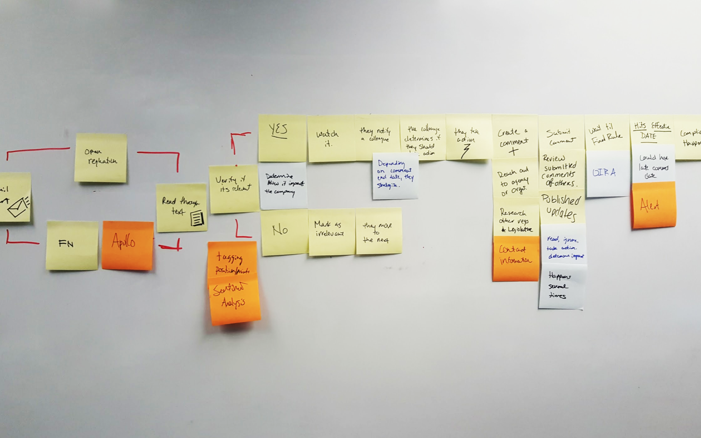
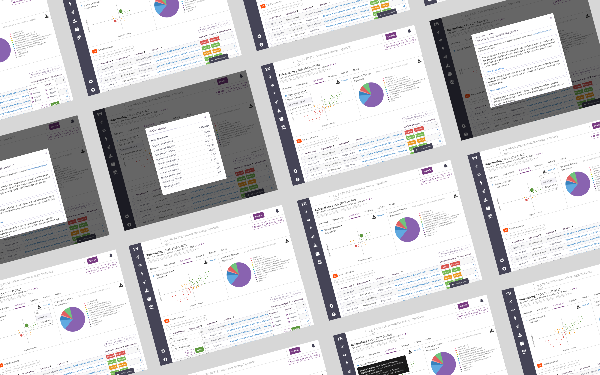
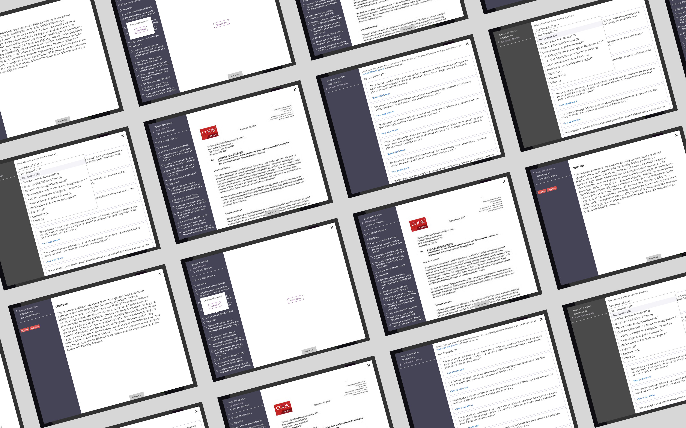
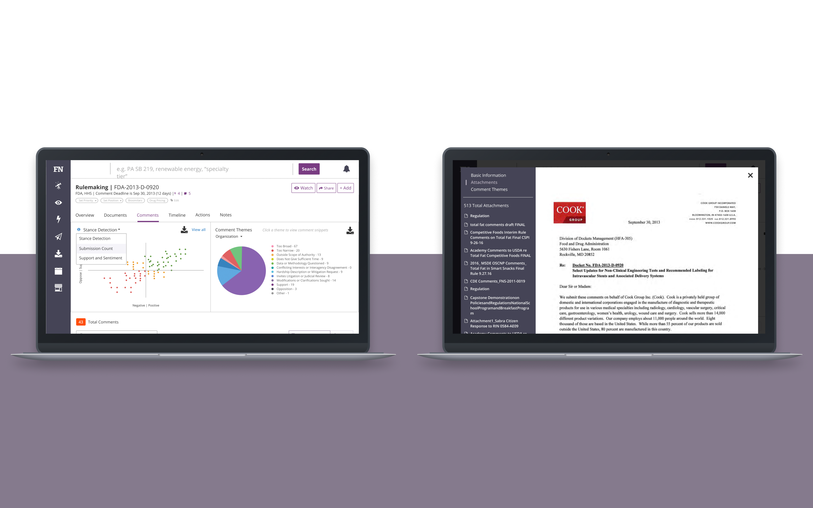

Challenges —
The main challenge for users was alleviating the fear of missing out or ‘FOMO’ with respect to policy information that may impact them. Staying on top of any issue and being proactive is key to building their strategy. More specifically for this project, users struggled to surface important regulation comments from government agencies.
 After identifying those problems, we were focused on making it easier to read valuable comments and measure them against the others. Our goal was to help our users feel effective when submitting comments.
The second challenge was reducing cognitive load and clarifying the information architecture for a simpler experience. Balancing these two requirements required several rounds of researching, iterating, and testing.


Solutions —
To resolve our problems, we created two new features: comment themes and a document viewer.
Comment Themes, are distinct groupings of public comments based on the language in the text. Having comments sorted by it’s text and searchable helps find like-minded industry partners to build coalitions and network. This feature ran through several tests, looking at the amount of groups, the use of language, and the ease of locating a specific comment. The team advocated for 12 groups to give users an overview of the comment themes and provide insight into comments across a wide spectrum.
The document viewer displays documents and comment directly in the platform. The viewer helps them search for language that is deemed a risk to the company so they can share that information with their managers. This feature went through rigorous usability tests to determine the most important data to display. Through them we discovered the document type, agencies, comment end date, and Comment Themes are most important when crafting their own comments.
Feedback —
To test the comment’s ease of use and how comments rank against each other, we performed several usability tests. We asked users to locate a document, open, and read a comment. From there see how that comment ranks against the others and explain how it affects them.
From the tests, the task completion rate was 81% and 79% of users would recommend it to their colleagues. Users reacted positively to the new changes because they were able to sift through any comment, read it, and share it with a colleague. Most of the comments they read, they would reuse for their own purpose or or to serve as a basis for a future coalition. All of this feedback led them back to feeling effective and more aware.
In July 2017, we released the update to everyone and we monitored the data and any feedback from users. We had suggestions ranging from annotating comments, to displaying agency pages. Most of the feedback revolved around building coalitions and bridging the gap into compliance — both we will eventually need to complete the workflow.
Impact —
The next month, we looked into how much money has attributed to the new features and it’s contributed roughly $1.8 million to the company’s ARR.
Team —
- Trent Lutmer - Product Designer
- Manuela Rios - Product Manager
- Kris Salvador - Front-End Engineer
- Brian Grom - Data Scientist
- Briane Cornish - Research